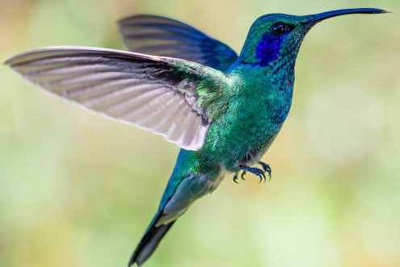

There are 6 common species of hummingbirds
Out of over 300 species of hummingbirds, the most common species of hummingbirds are the Broad-tailed, Ruby-throated, Black-chinned, Rufous, Calliope, and Anna’s hummingbird. Although hummingbirds are native to the Americas, only 8 species can be found in North America.
Physical Characteristics
Roughly 25 to 30 percent of a hummingbird’s weight is in its pectoral muscles. These are the broad chest muscles principally responsible for flying.
An average hummingbird’s heart rate is more than 1,200 beats per minute. In comparison, a human's average heart rate is only 60 to 100 beats per minute at rest.
Hummingbirds have no sense of smell but have very keen eyesight.
Hummingbirds lay the smallest eggs of all birds. Their eggs measure less than 1/2 inch long but may represent as much as 10 percent of the mother’s weight at the time the eggs are laid.
Diet
A hummingbird must consume approximately one half of its weight in sugar daily, and the average hummingbird feeds five to eight times per hour. In addition to nectar, these birds also eat many small insects and spiders, and may also sip tree sap or juice from broken fruits.
Hummingbirds do not suck nectar through their long bills, and they lick it with fringed, forked tongues. Capillary action along the fringe of their tongue helps draw nectar up into their throats so they can swallow.
A hummingbird can lick 10 to 15 times per second while feeding.
At rest, a hummingbird takes an average of 250 breaths per minute.
Depending on the species, habitat conditions, predators, and other factors, including threats to hummingbirds, the average lifespan of a wild hummingbird is three to 12 years.
Despite their small size, hummingbirds are one of the most aggressive bird species.